(26) Fixed XV – New results#
Motivation: No double dipping.
# HIDE CODE
import os, sys
from IPython.display import display
# tmp & extras dir
git_dir = os.path.join(os.environ['HOME'], 'Dropbox/git')
extras_dir = os.path.join(git_dir, 'jb-MTMST/_extras')
fig_base_dir = os.path.join(git_dir, 'jb-MTMST/figs')
tmp_dir = os.path.join(git_dir, 'jb-MTMST/tmp')
# GitHub
sys.path.insert(0, os.path.join(git_dir, '_MTMST'))
from vae.train_vae import TrainerVAE, ConfigTrainVAE
from vae.vae2d import VAE, ConfigVAE
from figures.fighelper import *
from analysis.glm import *
# warnings, tqdm, & style
warnings.filterwarnings('ignore', category=DeprecationWarning)
from rich.jupyter import print
%matplotlib inline
set_style()
def _add_perf(df):
x = df['r_tst_norm'].values.copy()
x[x < 0] = np.nan
perf = df['r'].values.copy()
perf[np.isfinite(x)] = x[np.isfinite(x)]
df.insert(8, 'perf', perf)
return df
Plot results (\(\beta = 0.8\), older fit)#
fits = {
'beta = 0.8': 'fixate1_nf-420_beta-0.8_(2023_10_25,22:25)',
'beta = 0.8 (zscr)': 'fixate1_nf-420_beta-0.8_zscr_(2023_10_25,17:35)',
}
for k, fit_name in fits.items():
df, df_all, ro_all, args, tr = summarize_neural_fits(fit_name)
df = _add_perf(df)
title = f"{k}, perf: {df['perf'].mean():0.3f}\nname: {fit_name}"
fig, _ = show_neural_results(df, display=False)
fig.suptitle(title, y=1.12, fontsize=11)
display(fig)
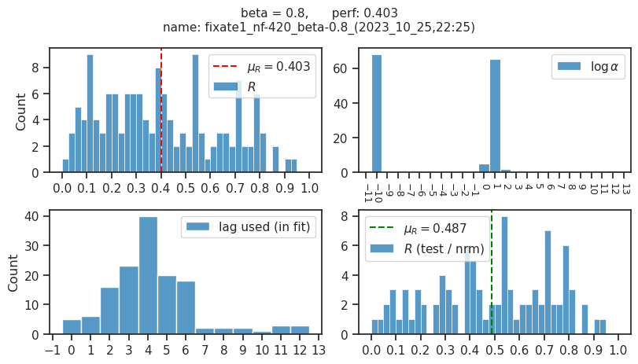
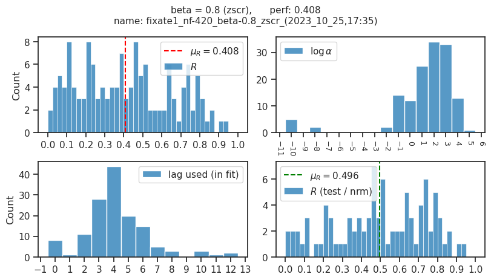
Save for the others#
fits = [
# beta = 0.5
'fixate1_nf-420_beta-0.5_(2023_08_08,15:39)/fit_main',
'vanilla_fixate1_nf-420_beta-0.5_(2023_05_07,02:51)/fit_main',
# beta = 1
'fixate1_nf-420_beta-1.0_(2023_04_29,19:41)/fit_main',
'vanilla_fixate1_nf-420_beta-1.0_(2023_05_07,01:18)/fit_main',
# beta = 5
'fixate1_nf-420_beta-5.0_(2023_05_07,08:59)/fit_main',
'vanilla_fixate1_nf-420_beta-5.0_(2023_05_15,07:23)/fit_main',
# beta = ae
'fixate1_nf-420_beta-ae_(2023_05_12,07:31)/fit_main',
'vanilla_fixate1_nf-420_beta-ae_(2023_05_13,07:49)/fit_main',
# beta = 0.8
'fixate1_nf-420_beta-0.8_(2023_05_13,14:52)/fit_main',
'vanilla_fixate1_nf-420_beta-0.8_(2023_05_11,02:19)/fit_main',
]
save_script_neural(fits, 'cuda:1')
[PROGRESS] 'run_neuron_kaba.txt' saved at /home/hadi/Dropbox/git/_MTMST/scripts
fits = [
# beta = ae
'fixate1_nf-420_beta-ae_(2023_05_12,07:31)/fit_main',
'vanilla_fixate1_nf-420_beta-ae_(2023_05_13,07:49)/fit_main',
]
save_script_neural(fits, 'cuda:1')
[PROGRESS] 'run_neuron_kaba.txt' saved at /home/hadi/Dropbox/git/_MTMST/scripts
log_a = [[-6], range(-2, 9, 2), [16]]
log_a = itertools.chain(*log_a)
sorted(log_a)
[-6, -2, 0, 2, 4, 6, 8, 16]
Plot results (all)#
fits = {
r'$\beta = 0.5$': 'fixate1_nf-420_beta-0.5_(2023_10_26,11:03)',
r'$\beta = 0.5$' + ' / vanilla': 'vanilla_fixate1_nf-420_beta-0.5_(2023_10_26,14:08)',
r'$\beta = 0.8$': 'fixate1_nf-420_beta-0.8_(2023_10_27,06:09)',
r'$\beta = 0.8$' + ' / vanilla': 'vanilla_fixate1_nf-420_beta-0.8_(2023_10_27,09:14)',
r'$\beta = 1.0$': 'fixate1_nf-420_beta-1.0_(2023_10_26,17:25)',
r'$\beta = 1.0$' + ' / vanilla': 'vanilla_fixate1_nf-420_beta-1.0_(2023_10_26,20:29)',
r'$\beta = 5.0$': 'fixate1_nf-420_beta-5.0_(2023_10_26,23:47)',
r'$\beta = 5.0$' + ' / vanilla': 'vanilla_fixate1_nf-420_beta-5.0_(2023_10_27,02:50)',
r'$\beta = ae$': 'fixate1_nf-420_beta-ae_(2023_10_27,13:23)',
r'$\beta = ae$' + ' / vanilla': 'vanilla_fixate1_nf-420_beta-ae_(2023_10_27,16:41)',
}
for k, fit_name in fits.items():
df, df_all, ro_all, args, tr = summarize_neural_fits(fit_name)
df = _add_perf(df)
title = f"{k}, perf: {df['perf'].mean():0.3f}\nname: {fit_name}"
fig, _ = show_neural_results(df, display=False)
fig.suptitle(title, y=1.12, fontsize=11)
display(fig)
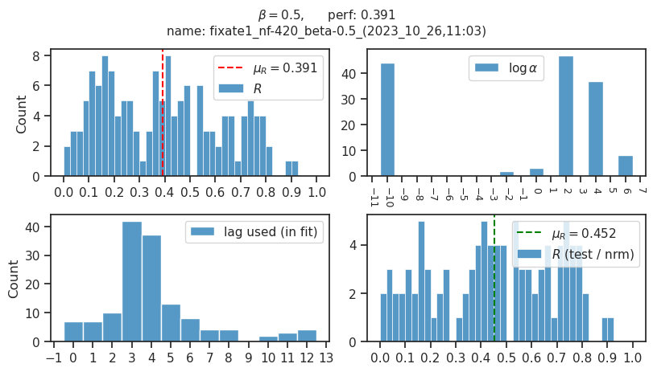
 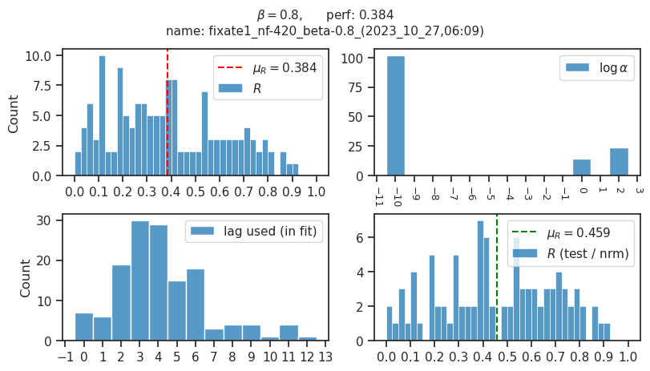
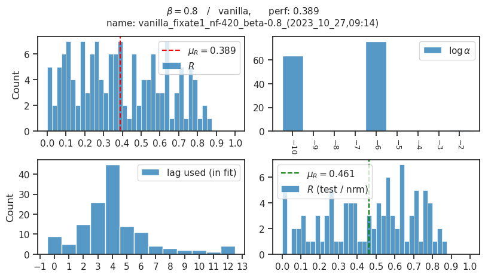
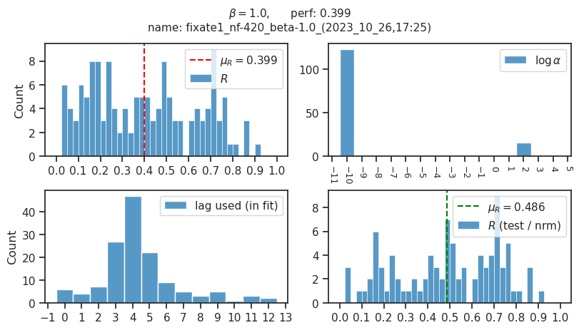
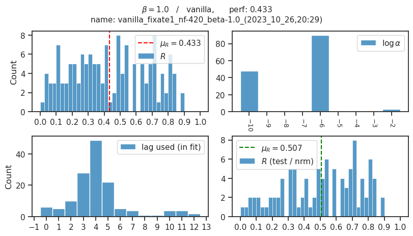
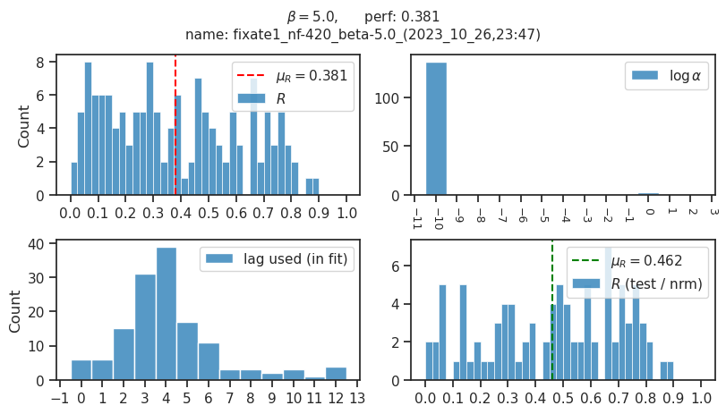
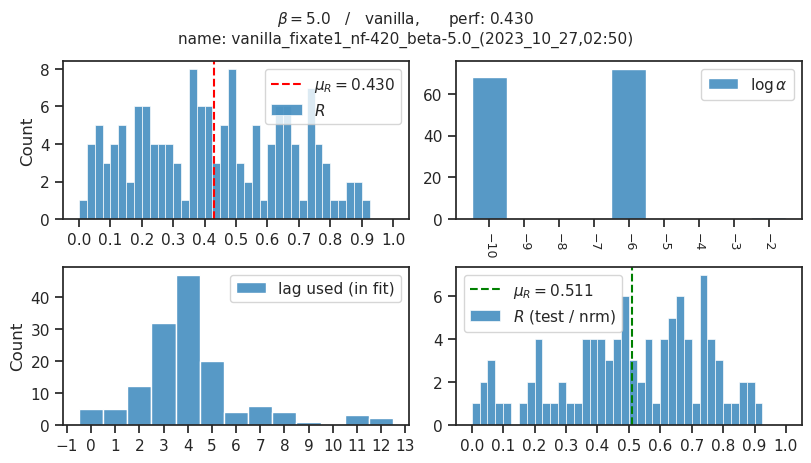
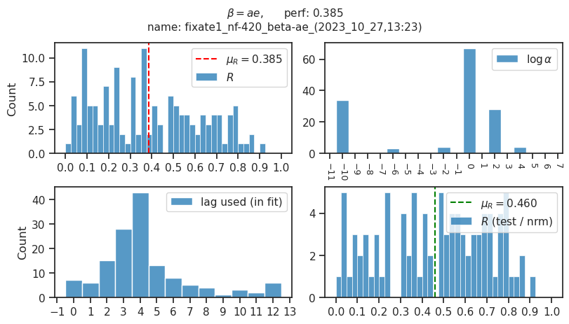
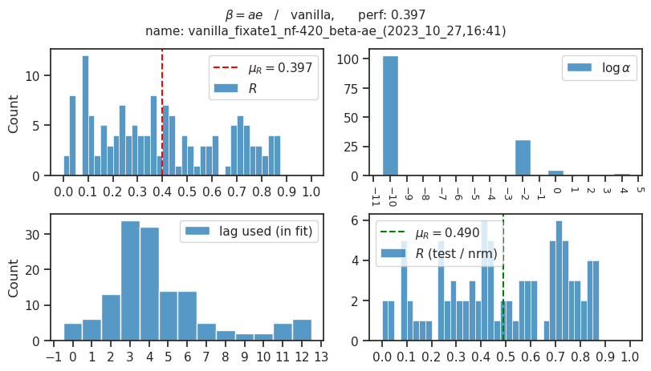
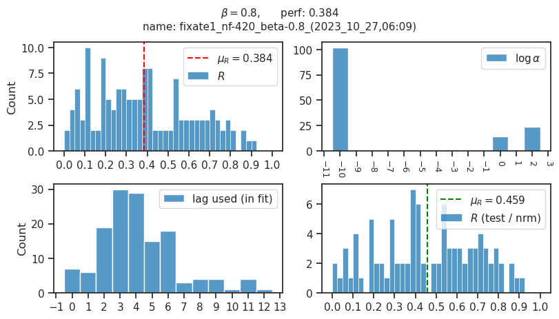
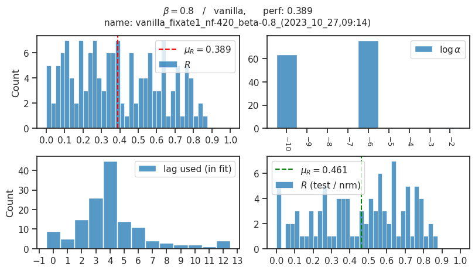
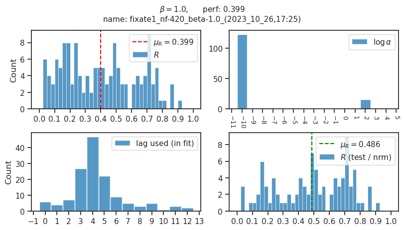
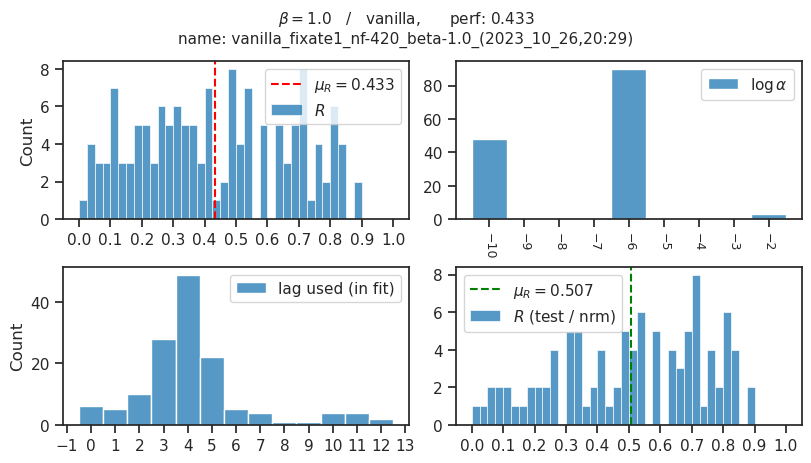
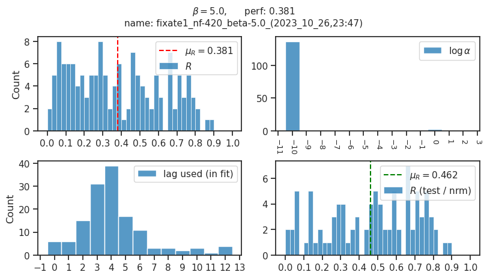
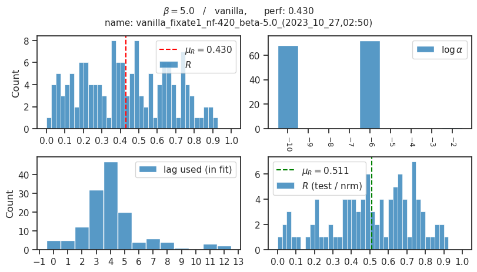
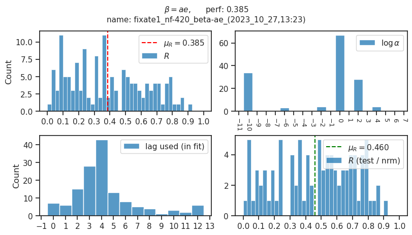
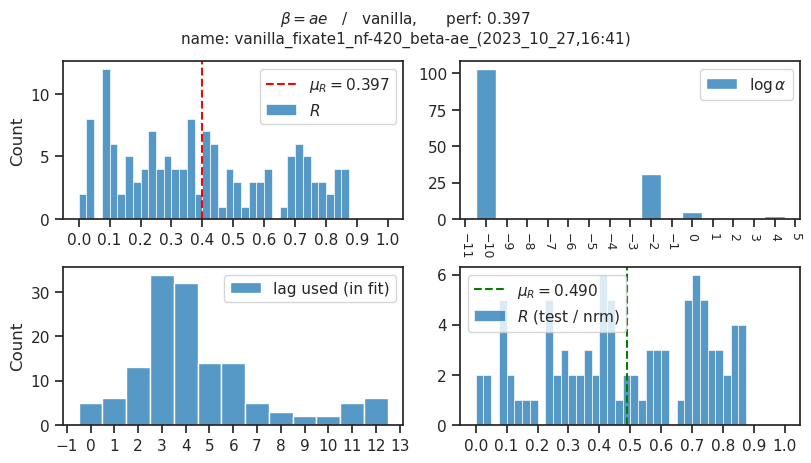
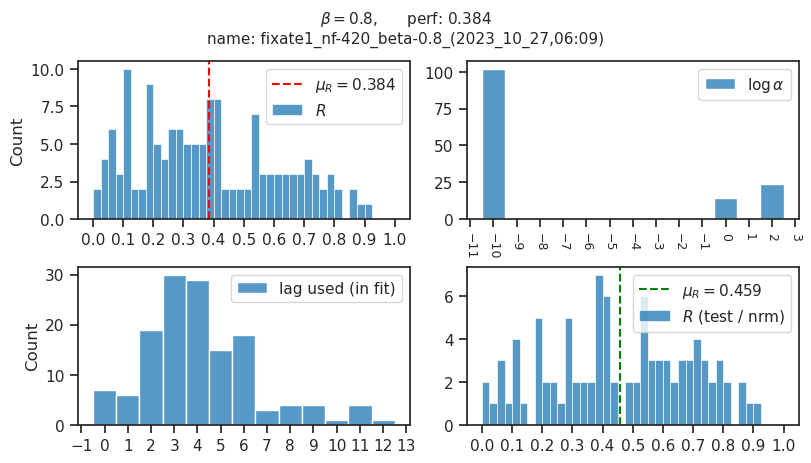
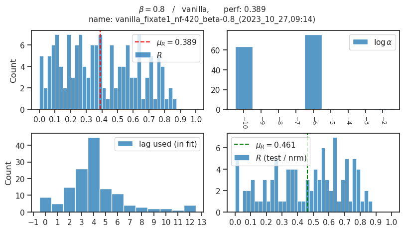
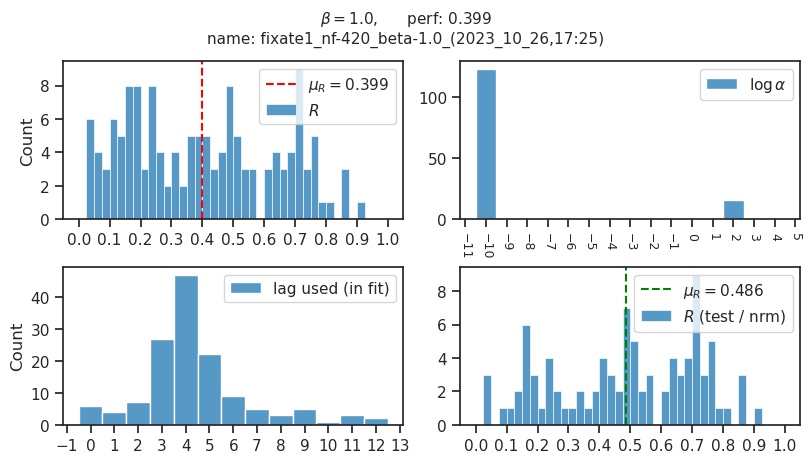
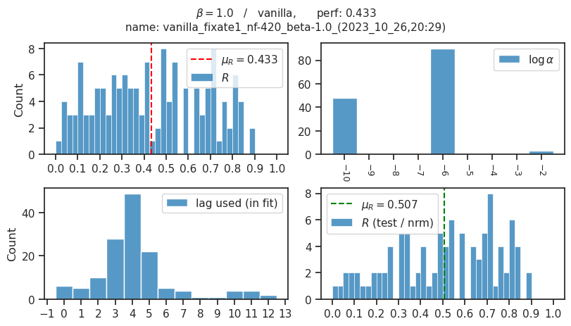
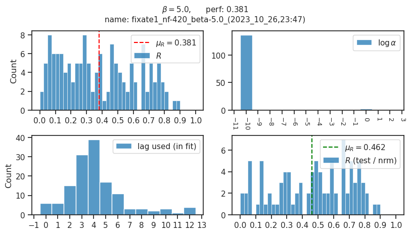
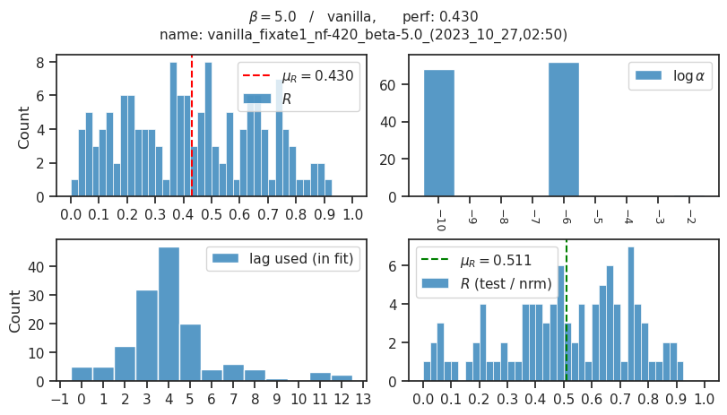
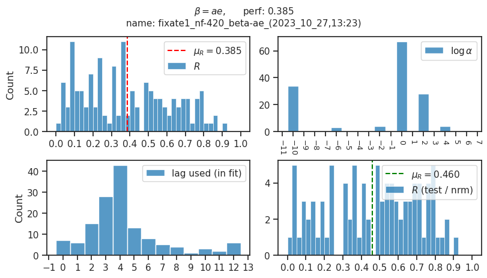
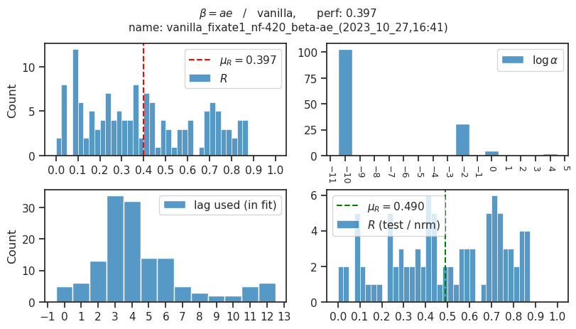
def _add_perf(df, fill_nan=True):
x = df['r_tst_norm'].values.copy()
if fill_nan:
x[x < 0] = np.nan
perf = df['r'].values.copy()
perf[np.isfinite(x)] = x[np.isfinite(x)]
df.insert(8, 'perf', perf)
return df
for k, fit_name in fits.items():
df = pd.read_pickle(pjoin(
results_dir(),
fit_name,
f"summary_{fit_name}.df",
))
if 'vanilla' in fit_name:
df = _add_perf(df, fill_nan=False)
else:
df = _add_perf(df, fill_nan=True)
*_, beta, model = extract_info(fit_name)
mu = df['perf'].mean()
se = sp_stats.sem(df['perf'].values)
print(model, beta, mu, se)
cNVAE 0.5 0.39131143565026183 0.019735983367182856
VAE 0.5 0.4146595230027863 0.02202557729306022
cNVAE 0.8 0.38386004813153823 0.0197376607543283
VAE 0.8 0.36805166861462524 0.022896630364273828
cNVAE 1.0 0.3987329546356648 0.019963794202430094
VAE 1.0 0.41811145372872377 0.022639505082893117
cNVAE 5.0 0.38126025521849083 0.02023355652858202
VAE 5.0 0.41448292268200704 0.022309388872782374
cNAE ae 0.38511825305322567 0.020306721568319284
AE ae 0.43181427062097383 0.04014095504147723
results = {
(0.5, 'cNVAE'): (0.391 + 0.020),
(0.5, 'VAE'): (0.415 + 0.022),
(0.8, 'cNVAE'): (0.433 + 0.020),
(0.8, 'VAE'): (0.383 + 0.023),
(1.0, 'cNVAE'): (0.399 + 0.020),
(1.0, 'VAE'): (0.386 + 0.021),
(5.0, 'cNVAE'): (0.381 + 0.020),
(5.0, 'VAE'): (0.414 + 0.022),
}
for k, fit_name in fits.items():
df = pd.read_pickle(pjoin(
results_dir(),
fit_name,
f"summary_{fit_name}.df",
))
if 'vanilla' in fit_name:
x = df['r_tst_norm'].values
x = x[np.isfinite(x)]
else:
x = df['r_tst_norm'].values
x = x[x > 0]
*_, beta, model = extract_info(fit_name)
gap = ' ' * 8 if model == 'VAE' else ' ' * 6
mu = np.mean(x)
se = sp_stats.sem(x)
msg = f"beta = {beta} / {model}{gap}"
msg += f"mu ± se = {mu:0.3f} ± {se:0.3f}"
print(msg)
beta = 0.5 / cNVAE mu ± se = 0.452 ± 0.025
beta = 0.5 / VAE mu ± se = 0.461 ± 0.027
beta = 0.8 / cNVAE mu ± se = 0.459 ± 0.025
beta = 0.8 / VAE mu ± se = 0.401 ± 0.029
beta = 1.0 / cNVAE mu ± se = 0.486 ± 0.024
beta = 1.0 / VAE mu ± se = 0.466 ± 0.028
beta = 5.0 / cNVAE mu ± se = 0.462 ± 0.025
beta = 5.0 / VAE mu ± se = 0.461 ± 0.027
beta = ae / cNAE mu ± se = 0.460 ± 0.026
beta = ae / AE mu ± se = 0.412 ± 0.031
def float_to_str(f):
s = f"{f:0.3f}"
if "." in s and s.startswith("0"):
return s[1:]
return s
table = collections.defaultdict(dict)
for k, fit_name in fits.items():
df = pd.read_pickle(pjoin(
results_dir(),
fit_name,
f"summary_{fit_name}.df",
))
if 'vanilla' in fit_name:
x = df['r_tst_norm'].values
x = x[np.isfinite(x)]
else:
x = df['r_tst_norm'].values
x = x[x > 0]
*_, beta, model = extract_info(fit_name)
gap = ' ' * 5 if model == 'VAE' else ' ' * 3
mu = np.mean(x)
se = sp_stats.sem(x)
table[model][beta] = ' \pm '.join([
f"${float_to_str(mu)}",
f"{float_to_str(se)}$",
])
for model, v in table.items():
s = ''
if 'ae' in v:
s = v['ae']
else:
for b in [0.5, 0.8, 1.0, 5.0]:
extra = '\n' if b == 5.0 else '&\n'
s += f"{v[b]} {extra}"
print(model)
print(s)
cNVAE
$.452 \pm .025$ & $.459 \pm .025$ & $.486 \pm .024$ & $.462 \pm .025$
VAE
$.461 \pm .027$ & $.401 \pm .029$ & $.466 \pm .028$ & $.461 \pm .027$
cNAE
$.460 \pm .026$
AE
$.412 \pm .031$
print(s)
$0.542 \pm 0.066$
for k, fit_name in fits.items():
df = pd.read_pickle(pjoin(
results_dir(),
fit_name,
f"summary_{fit_name}.df",
))
if 'vanilla' in fit_name:
x = df['r_tst_norm'].values
x = x[np.isfinite(x)]
else:
x = df['r_tst_norm'].values
x = x[x > 0]
*_, beta, model = extract_info(fit_name)
mu = np.mean(x)
se = sp_stats.sem(x)
gap = ' ' * 5 if model == 'VAE' else ' ' * 3
msg = f"beta = {beta} / {model}{gap}"
msg += f"({mu - se:0.3f} , {mu + se:0.3f} )"
print(msg)
beta = 0.5 / cNVAE (0.427 , 0.477 )
beta = 0.5 / VAE (0.434 , 0.488 )
beta = 0.8 / cNVAE (0.434 , 0.484 )
beta = 0.8 / VAE (0.372 , 0.430 )
beta = 1.0 / cNVAE (0.462 , 0.510 )
beta = 1.0 / VAE (0.438 , 0.493 )
beta = 5.0 / cNVAE (0.437 , 0.488 )
beta = 5.0 / VAE (0.433 , 0.488 )
beta = ae / cNAE (0.435 , 0.486 )
beta = ae / AE (0.476 , 0.607 )
lower = 0.462
for k, fit_name in fits.items():
df = pd.read_pickle(pjoin(
results_dir(),
fit_name,
f"summary_{fit_name}.df",
))
if 'vanilla' in fit_name:
x = df['r_tst_norm'].values
x = x[np.isfinite(x)]
else:
x = df['r_tst_norm'].values
x = x[x > 0]
*_, beta, model = extract_info(fit_name)
mu = np.mean(x)
se = sp_stats.sem(x)
if mu + se >= lower:
print(f"{beta} / {model}: bold")
else:
print(f"{beta} / {model}: --")
0.5 / cNVAE: bold
0.5 / VAE: bold
0.8 / cNVAE: bold
0.8 / VAE: --
1.0 / cNVAE: bold
1.0 / VAE: bold
5.0 / cNVAE: bold
5.0 / VAE: bold
ae / cNAE: bold
ae / AE: bold
for k, fit_name in fits.items():
df = pd.read_pickle(pjoin(
results_dir(),
fit_name,
f"summary_{fit_name}.df",
))
break
np.isfinite(df['r_tst']).sum(), np.isnan(df['r_tst']).sum(), len(df['r_tst'])
(105, 36, 141)